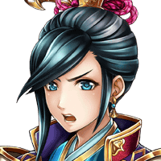

セリア
ま、オーン様の地獄の修行を耐えた 私が強くなりすぎたのかしら？
セリア
アンタ、そんな戦い方で、 よくこれまで生き残ってこれたわね。


気品のある女性
…………。
気品のある女性
………助けて頂いたことに礼は言います。
気品のある女性
ですが、あなた方は何者ですか？ 私をどうする気ですか……？
気品のある女性
返答次第では……私にも覚悟があります！
気品のある女性
この国を治める者として…… 利用されるぐらいなら、戦って……
セリア
………どうやら、さっき襲われた時に、 足を痛めたみたいね。
気品のある女性
こんな術を使えるとは……。 あなた方は物の怪かなにかですか！？
セリア
私たちはそんな存在じゃないわよ。 ティリスはどうか知らないけど。
ティリス
あ、そういえば自己紹介がまだだったね。 私は女神ティリス。
セリア
そっちでバカ面見せてるのは、 同じく召喚師のShou-chanよ。
スズネ
ええと……女神というのは、ともかく、 “しょうかんし”というのは……？
ティリス
うーん…… どこから説明すればいいのかな？
ティリス
まず、私たちは、 エルガイアという世界から来て……。
セリア
さっき襲っていた奴らが 戻ってくるかもしれないし。
スズネ
大丈夫です。 お陰で足はなんともありません。
セリア
そう。じゃあ取り敢えず移動しましょ。 私たちのことは、道すがら話すわ。
威圧感のある男
ほう……取り逃がすとは、 貴様らしくない不手際だな。
黒ずくめの男
申し訳ございませぬ……。 部下に任せたのが間違いでした。
黒ずくめの男
ですが報告によると、おかしな風体の者たち に邪魔されたようで……。
怪しげな雰囲気の女
そいつら、そこそこ腕は立つんだろ？ あたしが行こうかい？
威圧感のある男
ラカよ、カゲヌイの名誉挽回の機会を 奪ってやるな。
威圧感のある男
カゲヌイよ、あらためて命じる……。 姫をここに連れてくるのだ！